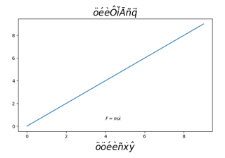
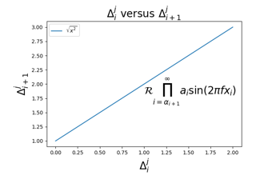
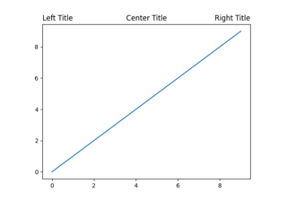

Text, labels and annotations#

Using accented text in Matplotlib
Using accented text in Matplotlib


Auto-wrapping text


The difference between \dfrac and \frac
The difference between \dfrac and \frac


Styling text boxes

Configuring the font family


Fonts demo (object-oriented style)
Fonts demo (object-oriented style)



Mathtext


Multiline

Concatenating text objects with different properties
Concatenating text objects with different properties


Controlling style of text and labels using a dictionary
Controlling style of text and labels using a dictionary


Title positioning
Unicode minus

Usetex Fonteffects